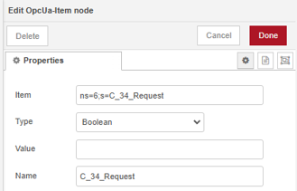
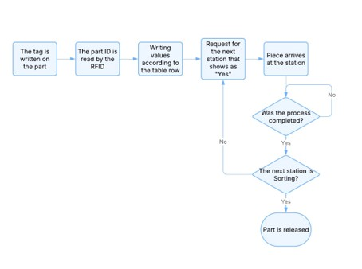

Abstract
With the recent increase of robust and complex technologies in the industrial field driving the fourth industrial revolution, also known as Industry 4.0, a current problem becomes alarming when comparing the resources available to companies with higher investment capabilities towards production lines against those with Legacy Systems. RFID technology, with the integration of Node-RED and OPC UA, is a low-cost solution extremely efficient and innovative when discussing systems automation, however a solution with a rigid and difficult code when applied to a Flexible Manufacturing System makes the integration of this complex system unachievable. The present paper proposes a new system with greater flexibility to substitute the original rigid programming of the RFID systems connected to the FMS via .csv archives that allows fluidity and versatility on the production process. The development was based on implementing changes and upgrading the existing Node-RED rigid programming structure by changing the method of which the system routes the parts to a .csv file, that allows the system easier reprogramming and addition of new products if necessary. This paper presents a case study based on a Festo FMS and Node-RED with OPC UA that is based on a current bigger research project.
1. Introduction
Industry 4.0, also known as the fourth industrial revolution, represented a significative evolution marked by the integration of digital technologies and cyber-physical systems in the production process (Zhou et al., 2015). By bringing the real and the digital world closer, this new production model promotes connectivity, real time data analysis and intelligent automation, generating opportunities to optimize processes, reduce cost and increase flexibility where current scenarios that pushes for a dynamic and competitive response to market demands is fundamental (Tyagi et al., 2021).
Many industries around the globe still operates with Legacy Systems, older system that even though robust and functional lack flexibility and integration to new technologies. The modernization of these systems is a challenge on the journey towards Industry 4.0. According to Jian et al. (2013) RFID emerges as a promising solution not only to the industrial area but can be used in many sectors. With the ability to collect and transmit data rapidly and precisely, RFID allows not only enhancement of tracking and product control, but also integration of conventional systems to highly automated environments.
This paper is organized as follows: section 2 is dedicated to the literature review; in section 3 we display the methods and materials; in section 4 we present results and discussion and section 5 is the conclusion.
1.1 Objectives
The main objective of this paper is to develop and test a new system with greater flexibility to substitute the original rigid programming of the RFID systems connected to the FMS, with focus on developing a reprogrammable structure. This proposal aims to reduce the limitations of static and rigid systems, offering an adaptable solution to the dynamic changes required by Industry 4.0. The new proposed programming structure aims to efficiently integrate Legacy Systems to the concepts of Industry 4.0, allowing greater flexibility in the configuration and reconfiguration of processes, as well as allowing for personalization of the production line. On this path, the use of RFID is inserted in the broader concept of modernization, serving as a toll to complement or even as the primordial feature within a programmable and scalable system that potentializes automation and optimizes technology integration.
2. Literature Review
The following literature review is needed to fundament the objectives described in section 1.1 and adopts the integrative review method that allows gathering, analyzing and synthesizing the main relevant studies about the theme in question. This approach allows for a wider and critic view of the advances already achieved in the field of Legacy System automation, the use of RFID and reprogrammable structures technologies. The present paper is based on theoretical and practical contributions in previous researches that serve as the necessary support to develop the presented proposal. We recommend to readers that are interested in this subject to further read the studies mentioned.
RFID
Radio Frequency Identification (RFID) is a technology that identifies via radiofrequency that allows a wireless communication between a reader and electronics tags. These “Tags” contain integrated circuits that store and transmit data using radio waves, without the need for physical contact or direct line of sight. The technology is characterized by the exchange of information between the reader and the Tag, allowing the identification and the read of the information stored and in some cases it is possible to write information on the Tag depending on the device being used (Weinstein, 2005). The RFID can be passive, triggered by the energy of the signal of the reader or active equipped with batteries to transmit signals, allowing for a greater reach and data capability (Pinheiro, 2017).
In the industrial environment, the use of RFID is being consolidated as an essential tool to manage logistic and productive processes with greater control and product tracking. The technology allows for automation and real time dada gathering, facilitating stock monitoring and transportation that contributes to operational efficiency (Pinheiro, 2017). RFID also facilitates the integration with Legacy Systems through an efficient communication between different platforms and allowing a closer follow-up of the production process. The elimination of the line-of-sight requirement makes RFID a crucial tool in optimizing in industrial process assuring more agility and reduction in errors.
Node-RED
Node-RED was developed by IBM in 2013 as a visual programming language based in Node.js, designed to integrate devices, services and APIs in a simple and effective layout. Its intuitive interface of drag-and-drop allows creation of complex flows without the need to write extensive lines of code, facilitating the implementation of solution in several different scenarios. Using JSON (JavaScript Object Notation) to manipulate and exchange structured data, Node-RED offers support to widely used protocols such as MQTT, HTTP, WebSocket and OPC UA being able to integrate between them (Ferencz & Domokos, 2019).
In the industry, Node-RED stands out for its ability to connect sensors, PLCs and IOT devices, promoting the integration of Legacy Systems with the technologies of industry 4.0. Its flexibility, as middleware, as well as scalability and compatibility with simple devices, such as Raspberry Pi, or complex servers makes it highly effective for industrial automation applications with FMS and real data processing. This versatility to optimize industrial processes makes Node-RED an accessible and effective solution to modernize operations in multiple sectors (Fiaidhi & Mohammed, 2021).
OPC UA Communication
OPC UA (Open Platform Communications Unified Architecture) communication is a standardized and robust technology for data exchange in a safe and interoperable manner between industrial systems, allowing an efficient integration between devices and different platforms. In this context OPC UA plays a fundamental role as the communication link between Node-RED, the production system and the RFID structure, assuring that information flows in an integrated and reliable form. (OPC Foundation, 1996) Through OPC UA, Node-RED is capable of gathering real time data from devices and sensors on the factory floor via the PLCs and synchronize them with RFID based tracking systems creating an efficient network for data exchange (OPC Foundation, 2025).
The independent platform of OPC UA enables Node-RED not only read/write capabilities from the RFID tags but also the possibility to send commands and updates for the whole production system, creating a full bidirectional integration that optimizes the industrial process. This communication is fundamental to monitor and control the production and facilitates automated decision making, solidifying OPC UA as a fundamental tool for the automation and evolution of Industry 4.0 (OPC Foundation, 2025).
3. Method and Materials
This paper is part of a larger research project with the objective of creating a full Digital Twin of a Legacy System, and as such is inserted in a context of continuous development and enhancement of its features. Because it is part of this project, some decisions have been made in the past to select the protocols and languages (such as Node-RED and OPC UA) and there is an existing structure at the research laboratory in place already functional in the FMS. For details on the Node-RED and OPC UA please refer to Sousa et al. (2024). By using the existing structure of the RFID as developed by Petrocchi (2024) with the objective mention in section 1.1 this paper creates an incremental enhancement of the current solution that is in agreement with the main project goal.
The implementation is being done at UNESP´s Automation Laboratory II at the Sorocaba campus. Node-RED is used as the main programing language of the interface with an OPC UA Server. We use the Unified Automation’s UA Expert as the client to supervise the OPC UA Structure and information. The FMS, as seen in Figure 1, is described in detail in section 3.1 below. The FMS has an Infinity 510 RFID system from Sirit. The current programming method and configuration for the RFID system is presented in section 3.2.
3.1 Flexible Manufacturing System
The FESTO´s FMS installed at the Sorocaba campus of UNESP is utilized for teaching and research purposes, with six programmable stations where it is possible to create different routes, scenarios and production methods. The stations are detailed below:
- Distribution/Testing – Where parts are fed to the line na their type (color) is determined.
- Processing – Where parts are tested and drilled;
- Vision – Where a picture can be taken;
- Robot – Where the part can be manipulated and assembled;
- Storage – Where parts can be stored for future use
- Sorting – Where parts are separated into one of three different output lines.
All stations are connected via a conveyor system with RFID antennas installed at Distribution/Testing, Processing, Robot and Storage.

3.2 RFID System and Current Structure
As mentioned before, the Node-RED programing and configuration of the RFID System is not part of the scope of this paper and further information can be found in Petrocchi (2024). In this subsection we will show the main configuration of the RFID system (Figure 2), the configuration of the PLCs signals that are responsible for moving the cart in the conveyor (Figure 3), and the current routing structure.

Figure 2 above shows the initial configuration of the antenna set and the control module. Node-RED stablishes a connection with the antenna and sends all the relevant information contained at the “Initialization” function to set up the interface and the 4 antennas.
To develop the project, using the structure already in place set up by Sousa et al. (2024), the cart on the conveyor can be called at any given station using the variables described in Table 1. This function will clear the path for a single cart from wherever it is on the conveyor to the designated station. To perform this action OPC UA Item nodes need to be configured in Node-RED. The configuration of this nodes is presented in Figure 3, with the example of the signal for the Distribution/Testing station.
| Station | Variable |
|---|---|
| Distribution/Testing | C_34_Request |
| Processing | C_35_Request |
| Vision | C_36_Request |
| Robot | C_37_Request |
| Storage | C_38_Request |
| Sorting | C_39_Request |

Lastly, we present the current structure for routing developed in Figure 4. The present structure establishes the routing of parts by connecting the links on the left part of Figure 4. There are only three possible Part Numbers: AAAA, BBBB or CCCC. By connecting the links, routing for that Part Number is fixed and any changes will need reprogramming. Even though it is functional, it does not have the ability to be easily customized and the creation of additional routes and Part Number will result in additional coding on Node-RED. The current system lacks flexibility and does not allow for parts to be re-routed during the production.
Once a part is released through the Distribution/Testing station, a Part Number is assigned and the value is written in the RFID tag. This will also stablish the route and in which other stations that cart should stop. At each station that has an antenna, once the part arrives the Part Number is read once more, and the station can perform the necessary production protocol. For stations with an antenna, the system waits for a signal from the PLCs notifying that production has finished and the part is at the cart back from production to release it to the next station in the route. For the Vision station, that does not have an antenna, there is a time delay that allows the picture to be taken and then the cart will move on. The last station (Sorting) is mandatory and does not have an antenna as its function is to remove a part from the line once it is completed.

4. Results and Discussions
As mentioned in section 3.2, even though the RFID system is integrated to the overall application, it does not comprehend a usable solution in the industrial line. The code is structured to allow only three types of parts to be produced without altering what is performed at each station. The Part Number ID on the tag remains fixed. This system, though operational, requires great amount of coding for any change and is unfit if a flexible production line is expected. The programming structure is rigid and closed, which generates obstacles for the personalization of processes and the interpretation of the code itself, a known issue of Node-RED due to its lack of standardization.
Any changes to route or adding another Part Number ID would need to be accomplished by rewriting the code, which can make them time consuming and prone to errors. A new structure that allowed for more control of the production process and it was easily adaptable was needed as the project develops. The RFID structure is one of the main features that allows for flexibility and personalization of the products and so this enhancement was planned.
As a solution to the above-mentioned discussed issues of the current structure, a new proposal was developed to be more intuitive and flexible, based on comma-separated values (.csv) files that Node-RED can handle with ease are can be edited by any spreadsheet editor (such as Microsoft Excel). The structure of the .csv files is shown in Table 2 below, where the first column is the Part Number ID and the remaining columns represent each of the stops in the FMS. By entering “Yes” or “No” on the file we can determine if that Part Number should or should not stop.
| ID | Testing | Processing | Vision | Robot | Storage | Sorting |
|---|---|---|---|---|---|---|
| AAAA | Yes | No | Yes | Yes | No | Yes |
| BBBB | Yes | Yes | No | Yes | No | Yes |
| CCCC | Yes | Yes | No | No | Yes | Yes |
In this format the stations of the production system are represented by the columns while the types of pieces that the RFID system can handle are listed on the lines. From the structure, the limitation of three types is instantly removed, since the file can contain as many lines as necessary with any configuration of Yes/No for the stations.
For each part and station combination, the table indicates if a part should stop and perform any action (“Yes”) or if should not stop (“No”). This Yes/No variables are converted into Boolean signals that will be interpreted by functions so that only combinations that yield “1” will trigger a request for cart for the next station in the production order. The logic of production is now centralized in the .csv file, allowing for adjustments to be made easily and without the need to change any code in Node-RED.
The flowchart of the decision-making process is displayed in Figure 5 below. In the first station (Distribution/Testing) the value of the ID is written on the part. After that the correct line is selected in the .csv file, that contains the next steps of the routing procedure. A request is sent to the next combination of Station/Stop. After the part arrives at the designated station, we wait for a signal from the PLCs that the process is completed for the part to be released to the next station in which the line has a “Yes”. If that station is the last one (Sorting) the process is finished and the part is released and counted as produced.

To implement the above flowchart, the following code was implemented detailed in Figure 6 and Figure 7. Figure 6 refers to the left side of the flowchart, by selecting the correct line of the .csv table. Since this is still a proposal and not fully integrated to the end solution, some adaptations were needed. At the beginning of the flow, there are three inject nodes for the Part Number ID (in the real system this will be provided by the MES). The “read file” searches the .csv file for that ID and sends the respective line to the function “Convert to variables” in which the table is changed to Boolean variables that will be used to determine the route the cart will take.
With the stablished route set, a new model for decision of stops is made based on the Boolean variables as detailed in Figure 7. The order of the flow is the same order of the stations in the FMS, with the cart being able to stop in all of them if necessary. At each station a check is made inside the “Stop at …” function to determine if the cart should stop there.
If the value is true than the cart will be stopped at that station by using the corresponding variable detailed in Table 1. Once the cart arrives at the desired station the signal O_xx_CartStat will identify the arrival and the process at that station can start. For testing purposes all these actions were substituted by timed events. Once the time elapses the flow than moves to the next station to verify if a stop is scheduled.
If the value is not true than the production is completely skipped at that stop and the flow automatically checks the next station to verify if a stop is scheduled. At the last station (Sorting) the stop is mandatory as it is the end-of-the-line for the production process. At that stop signal that the cart arrives will simply be used to start the process of removing the finished part from the line.

Thanks to the implementation of the table and the flow detailed in Figure 7 we now have a fixed structure that can handle any combination of stops and routes, simplifying the code and reducing it´s size. As the control of the route is done by a .csv file the number of nodes needed to achieve the routing is diminished considerably, resulting on a flow that will ultimately be easier to maintain and enhance. This reduction facilitates viewing and comprehension of the process, but also contributes to optimize the use of space, making the system more efficient and using less computational resources.
This approach does not only mean customization, but it enhances the access and usability of the system. Sifts in production planning and routes can now be done directly into the .csv file, without the need for deep programming and technical skills. By reducing the knowledge level to achieve customization, useres with little experience in programming can understand and adapt the production process, ultimately enhancing the operational efficiency of the line.
The flexibility brought by the use of the .csv table allows for quick changes in routing without the need to modify the Node-RED code. Compared the previous system, that would require re-writing of code and adjustments, the new model reduces significantly the configuration time while increasing versatility.
4.1 Node-RED Challenges
Despite of the advances done, several challenges were faced due to, mainly, the lack of standardization of Node-RED. The absence of clear protocols and structures to organize and name the nodes increases the complexity for comprehending and maintaining the flows, as the platform gives the programmer freedom and different manners to solve the same issue, which dos not allow for a clear-cut solution to be drawn. This point has been addressed in previous research, not only by this research group, but by several authors and remains an issue when adopting Node-RED in large-scale industrial robust solutions. To diminish the negative impact of this undesirable feature, it was necessary to create an internal standard with detailed descriptions and pre-defined flows for recurring issues that appeared in other parts of the project.
Another valid point is the dependance on external node libraries, such as the node-red-contrib-s7 that have their specific development. Despite the reported challenges, Node-RED still emerges as a powerful toll to integrate technologies such as RFID and OPC UA into industrial systems, proving its viability in the field of control and automation.
5. Conclusion and future work
The objective of this paper was to develop and test a new system with greater flexibility to substitute the original rigid programming of the RFID systems connected to the FMS. Even though the results found are from a test version and the final implementation still needs, the performed tests proven the success in the integration between the new model and the FMS line. The solution based in a .csv file is efficient as it simplifies processes of programing routes, allowing for the personalization of the routes without any change to the Node-RED code as shown in the development section of this paper. This approach also allowed a more intuitive programing, reducing the time and effort needed for adaptations and making the system accessible to users with a wider variety of technical and programming knowledge. To program a new part or to reprogram an existing route one simply need to change the .csv file, without necessity of understating the programming of Node-RED and how to manually change the route and its specific programing logic. It is no longer necessary to understand the program running on the background, simply edit the .csv file to whatever is necessary.
Besides the proven viability, the system is more versatile as it offers greater flexibility in managing the production flow and opens new possibilities of personalization and future expansion. Its structural simplicity is seen as an asset. Allied with the integration with protocols such as OPC UA, it widens the potential of its use in different industrial context.
As future work, the full integration with the system is necessary, adapting the code to the current reality of the rest of the FMS and improvements in the code to allow re-routing during production. The ability to determine not only if a part should stop at any given station but what need to be performed at that station (implemented by a second .csv table) is also in the scope of future work for the project.
To summarize, the results achieved reinforce the value of this new approach that allies simplicity, flexibility and scalability potential, contributing to the advance of the industrial automation systems.
Acknowledgements
This paper was developed in part by researches of the GPI4 Research Group.
References
Ferencz, K., & Domokos, J. (2019). Using Node-RED platform in an industrial environment. XXXV. Jubileumi Kandó Konferencia, Budapest.
Fiaidhi, J., & Mohammed, S. (2021). Virtual care for cyber–physical systems (VH_CPS): NODE-RED, community of practice and thick data analytics ecosystem. Computer Communications, 170, 84–94. https://doi.org/10.1016/j.comcom.2021.01.029
Jian, M.-S., Wu, J.-S., Jian, M.-S., & Wu, J.-S. (2013). RFID Applications and Challenges. Em Radio Frequency Identification from System to Applications. IntechOpen. https://doi.org/10.5772/53368
OPC Foundation. (1996). What is OPC? OPC Foundation. https://opcfoundation.org/about/what-is-opc/
OPC Foundation. (2025). Unified Architecture—Landingpage. OPC Foundation. https://opcfoundation.org/about/opc-technologies/opc-ua/
Petrocchi, G. S. [UNESP. (2024). Integração entre RFID e padrão OPC UA aplicada a um sistema de manufatura. https://hdl.handle.net/11449/257030
Pinheiro, J. M. dos S. (2017). Identificação por Radiofrequência: Aplicações e Vulnerabilidades da Tecnologia RFID. Cadernos UniFOA, 1(2), Artigo 2. https://doi.org/10.47385/cadunifoa.v1.n2.889
Sousa, D. R. de, Caldana, V., & Godoy, E. P. (2024). Upgrading legacy systems for Industry 4.0 with Node-RED and OPC-UA. 5th South American Industrial Engineering and Operations Management Conference. https://doi.org/10.46254/SA05.20240068
Tyagi, A. K., Fernandez, T. F., Mishra, S., & Kumari, S. (2021). Intelligent Automation Systems at the Core of Industry 4.0. Em A. Abraham, V. Piuri, N. Gandhi, P. Siarry, A. Kaklauskas, & A. Madureira (Orgs.), Intelligent Systems Design and Applications (p. 1–18). Springer International Publishing. https://doi.org/10.1007/978-3-030-71187-0_1
Weinstein, R. (2005). RFID: A technical overview and its application to the enterprise. IT Professional, 7(3), 27–33. IT Professional. https://doi.org/10.1109/MITP.2005.69
Zhou, K., Liu, T., & Zhou, L. (2015). Industry 4.0: Towards future industrial opportunities and challenges. 2015 12th International Conference on Fuzzy Systems and Knowledge Discovery (FSKD), 2147–2152. https://doi.org/10.1109/FSKD.2015.7382284
Biographies
André Oliver Litvay is currently a student of the technical course of Electronics integrated to High Scholl at the IFSP Campus Sorocaba, started in 2021 and a student of the Electrotechnical course at ETEC Rubens de Faria e Souza, started in 2024, both to be concluded at the end of 2025. Since 2024 holds a scholarship of the Scientific Initiation program PIBIC Junior CNPQ/Reitoria Unesp at the Sorocaba Campus of UNESP.
Vitor Mendes Caldana began his career with a technician course in Electronics from Liceu de Artes e Ofícios in 1999, followed by an undergraduate degree in Electronic Engineering from Universidade Presbiteriana Mackenzie in 2004. In 2016, finished his M.Sc. in Industrial Engineering. Since 2023 is a student at UNESP to obtain his Ph.D. in Electronic Engineering in the Industry 4.0 field. In 2014 began his teaching career in FIEB as a substitute teacher, followed by an associate professor position for the Technical Course of Electronics. In 2016 became a full-time professor by joining IFSP, moving to the Sorocaba Campus to implement the Electronics High-School Technical Course. In 2018 started the Research Group in Industry 4.0 at IFSP and has been its leader since. Between 2019 and 2020, along with his colleagues, designed and implemented the first Post-Graduate Program in Industry 4.0 of IFSP at the Sorocaba Campus. He is currently involved in research projects in Industry 4.0. https://lattes.cnpq.br/8361188962318020.
Eduardo Paciencia Godoy received the B.Eng. degree in Control and Automation Engineering at Itajubá Federal University (MG-Brazil) in 2003 and the M.Sc. and Ph.D. degrees in Mechanical Engineering at University of São Paulo (SP-Brazil) in 2007 and 2011. Currently he is an Associate Professor of Unesp (SP-Brazil) with research interests in IoT and Industry 4.0. http://lattes.cnpq.br/0072632067545698.